39. Capture Mode Config 占点模式配置
Set steam game folder - 请先设置完毕 Steam 游戏路径
Complete this step first
请先完成此步
1.4 设置 Steam 游戏资源路径 - Set Steam Game Folder
2.1 Import DIY Map 导入 DIY 地图
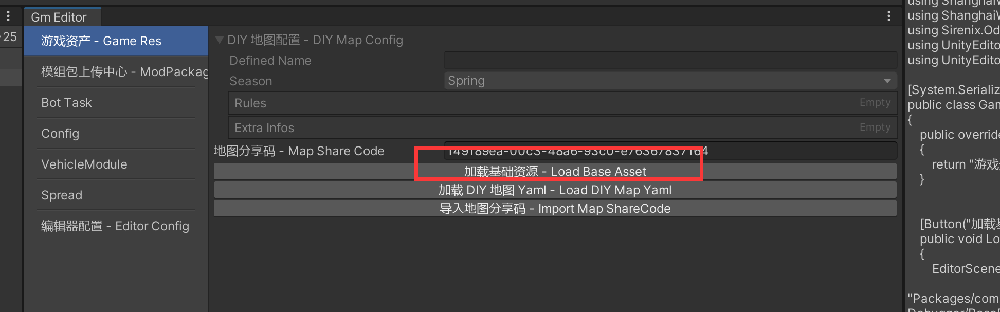
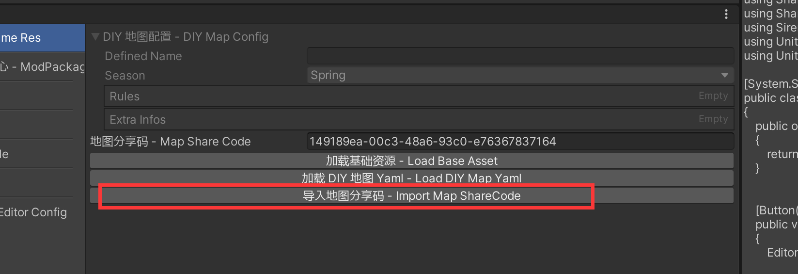
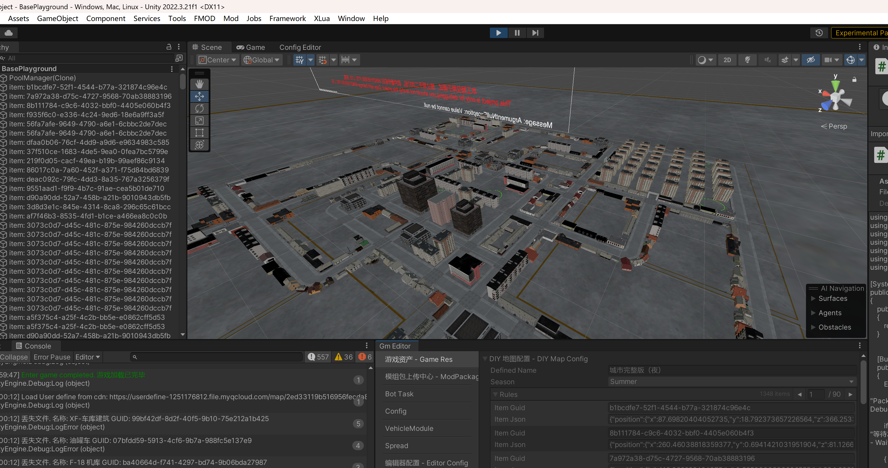
2.2 Open non-diy map 打开非 DIY 地图
Just open the desire scene in the editor
只需在unity 中打开对应场景即可
Create capture zone config 创建占点配置配置
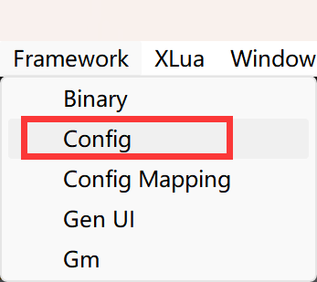
Set CaptureZoneModeConfig for config
Config 类型选择 CaptureZoneModeConfig

Input a proper name as the config file name
输入一个合适的名字作为文件名称
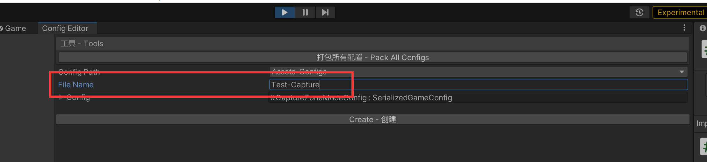
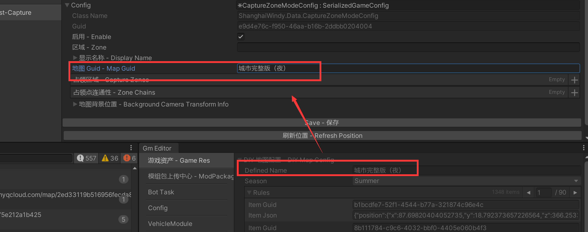
Set config 设置配置
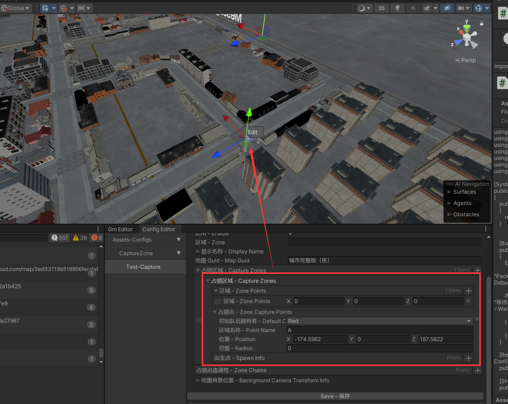
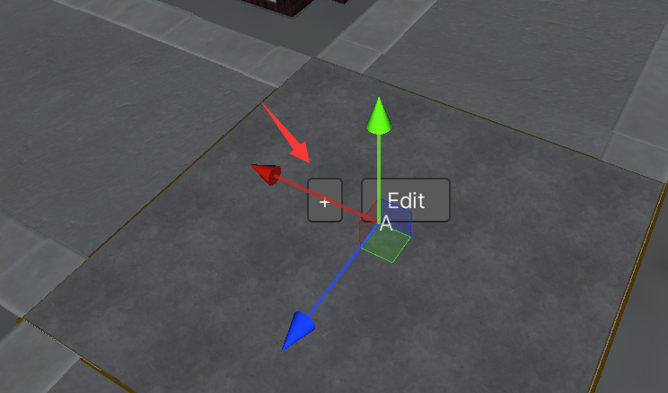
Click edit to add spawn point
点击 Edit，+号 ，增加出生点
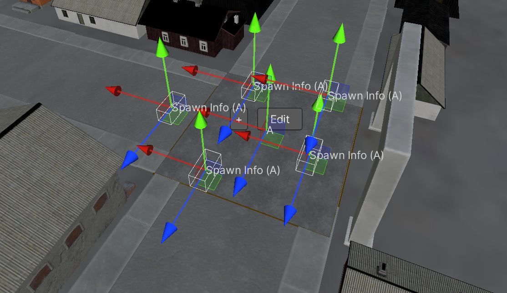
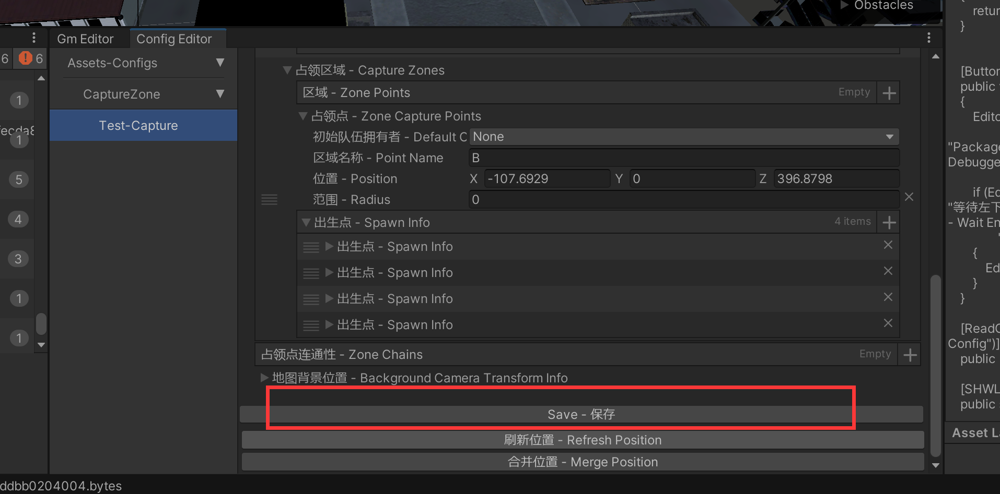
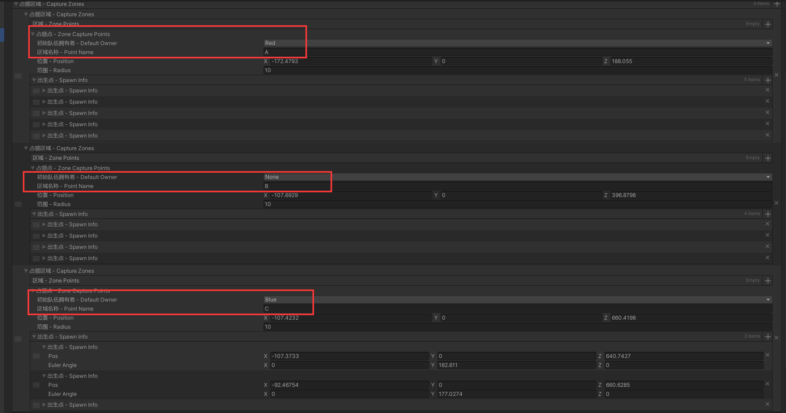
Set the zone chain
请确保设置连通区
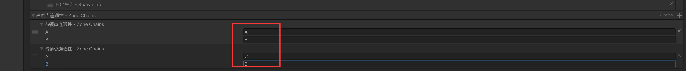
Build 打包
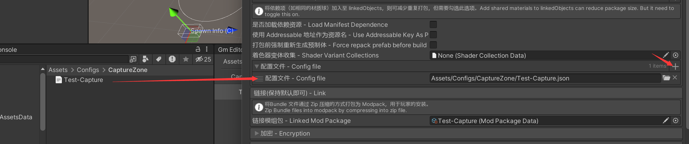